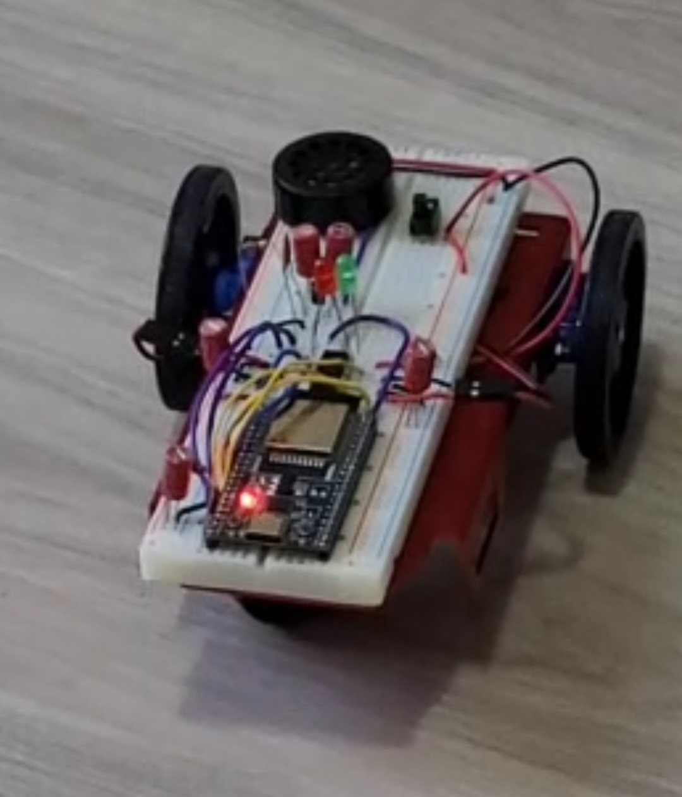

RC Car for ELEX 2120

| Course | ELEX 2120, BCIT (Semester 2) |
|---|---|
| Drive | Tank drive: two large wheels and a caster |
| Electronics | H-bridge motor driver, breadboard, speaker |
| Control | Phone app built with RemoteXY |
Overview
This was a class project for ELEX 2120 at the end of my second semester at BCIT. The goal was to build a remote controlled car and apply what we learned in class. The car uses tank drive: two large wheels, each driven by its own motor, with a caster wheel for balance. All of the electronics are wired on a breadboard mounted on top.
Motor Control
I learned how to wire an H-bridge to drive the motors in both directions, and how to use PWM to control their speed. Because each side is driven separately, the car steers by running the wheels at different speeds or in opposite directions.
Sound with PWM
I also used PWM to drive a speaker. The car plays a different tone depending on which direction it is moving, which was a fun way to see that the same technique used for motor speed can also generate sound.
Remote Control
The car is controlled from a phone using RemoteXY. I learned how to design the control interface and connect it to the car's code, so the car responds to the on-screen controls.